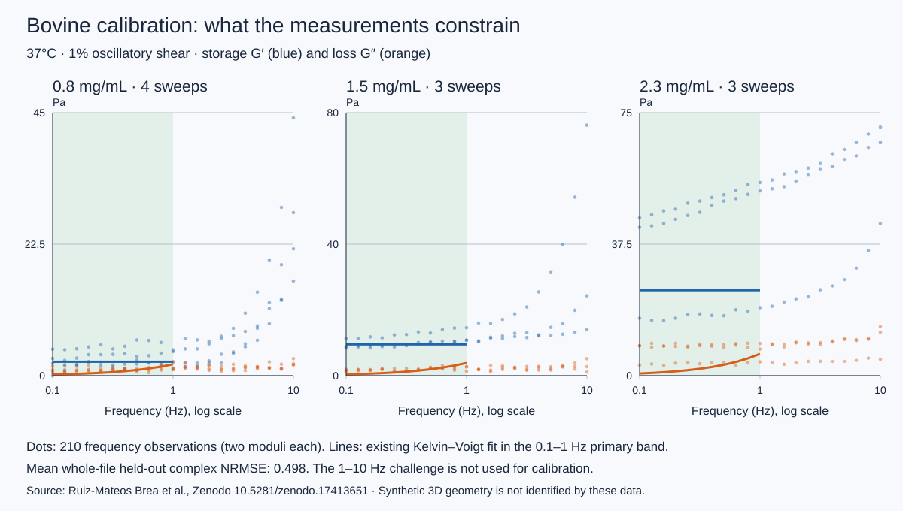

What the data actually measure

Ten archived frequency sweeps at 0.8, 1.5 and 2.3 mg/mL, 37°C and 1% oscillatory shear. The fit uses the 0.1–1 Hz primary band. The 1–10 Hz challenge stays visible and is excluded from calibration.
At 1.5 mg/mL the reused bulk fit has G′ = 9.522 Pa and G″ = 3.891 × f(Hz) Pa, equivalent to a parallel viscosity of 0.6193 Pa·s. Mean whole-file model-selection cross-validation error is 0.498 complex NRMSE. This substantial error and model selection on the same folds limit predictive confidence.
Each synthetic specimen receives one scalar energy-density factor, fixed across all locking and rupture scenarios. Its mean xy/xz response at the experimental 1% amplitude matches the bulk target. A homogeneous parallel dashpot matches baseline loss; it does not identify microscopic viscosity or aging-dependent dissipation. Fracture curves are quasistatic and omit that dashpot. The two sampled shear planes do not constitute a full 3D anisotropy surface. Four 208–222-node cells sample geometry variability; network-size convergence is not established.
Neither fiber diameter, molecular modulus, true flexural rigidity, permeability nor a fracture-energy law is identified by this bulk fit.
Clustered and distributed cases share the same graph, selected-junction count, degree counts, affected-angle count and total angular coefficient. Selected junctions have 10× angular locking. The model locks existing junctions and creates no new graph edges. It changes mechanical constraints rather than graph connectivity. This is a mechanical crosslink surrogate, not an AGE concentration or age in years. Local segment directions and lengths are not matched; their residual differences are reported in the source diagnostics. The 10% and 20% rupture thresholds are separate assumptions, not fitted bovine failure data.
Observed shear response and damage
ClusteredDistributedUnlocked baselineAll descriptive trajectories are shown. Faint traces: specimens. Dashed: strict curvature tier not passed.
A maximum at the 50% shear cap is right-censored. Work through this cap is an energy density for this protocol, not fracture toughness Gc or a phase transition. No simulation here establishes complete physical separation. Display coordinates and axial colors are rounded to 10⁻⁶; the raw archive retains full precision.
Small-strain stiffness at matched locking budget
All changes use the same baseline scalar within each specimen. Curves show four seeds with both loading planes; these correlated directions are not independent biological replicates.
Numerical qualification and paired comparisons
Complete factorial: 25/50 strain increments; three separately preserved 100/200-step controls. The three Hessian checkpoint labels can coincide when the maximum occurs at the cap. Primary gates: free-node force ≤10⁻⁷, complete trajectory to the cap, terminal work/energy discrepancy ≤2%, and ≤5% step-refinement change. Selected initial, observed-peak and terminal states receive a true-gradient Hessian screen. Marginal modes do not prove rigidity. Full raw trajectories, failures and censoring remain downloadable.
Campaign 1: measured architecture is the next physical test
The 2025 bovine FIB-SEM study reports three 111.8 µm³ volumes, with 2,108 / 2,070 / 2,128 segments and 1,710 / 1,751 / 1,766 nodes. Overall segment arclength is 346.55 ±338.75 nm, endpoint distance 302.70 ±283.37 nm, and tortuosity 1.13 ±0.31.
Those summaries do not provide the full size/orientation distributions, raw adjacency, correlated fiber paths or specimen-matched nonlinear curves. Raw data are available on request. A draft request is included in the source package and has not been sent. The current periodic Voronoi cells do not claim to reproduce those measured networks.
The planned test freezes measured geometry and physical volume independently, fits one shared material law on training specimens, and withholds complete architecture–rheology specimen/batch pairs. The small 2025 nonlinear experiment is a separate stress-ramp protocol at 0.8 mg/mL; it is not established as the same batch as the frequency dataset. NIST’s DVC Challenge 2.0 supplies a separate measured 3D collagen-displacement route around a contracting inclusion, useful after image and displacement validation.
PDB 1CAG is a collagen-like peptide crystal structure. It supplies molecular structural context, not hydrogel topology or a bovine material calibration.
Campaigns 2 and 3: avoid unsupported scale transfer
The existing solvent-sensitive dityrosine campaign finished with 0/3 admissible hydrated linked/control laws. Its global wet force/energy check and coupled-fit inconsistencies prevent transfer to a chemically validated network law. The audited molecular link is a hypothesized intramolecular telopeptide loop, which also requires a justified bridge to intermolecular fiber junctions. Energy-consistent averaging must retain cross terms, prestress and the actual molecular deformation window.
The retrieved orientation/dual-network archive contains no ready measured orientation histograms, and its manifest verifies 76/77 files (README mismatch). Its broad full-profile readiness gate is not a substitute for a focused type-I evidence contract. A narrower bovine-dermis versus rat-tail type-I comparison has closely matched assay conditions in the 2024 atlas. An official ten-TIF figure dataset permits conditional summary-response digitization, with pixel and aggregation uncertainty; raw rat replicate data and measured 3D coordinates were not recovered. The beaver–human comparison has sequence/backbone provenance but no matched mechanical calibration. Species comparisons need separate mass, volume, connectivity, crosslink and coupling controls; a species name cannot stand in for those properties.